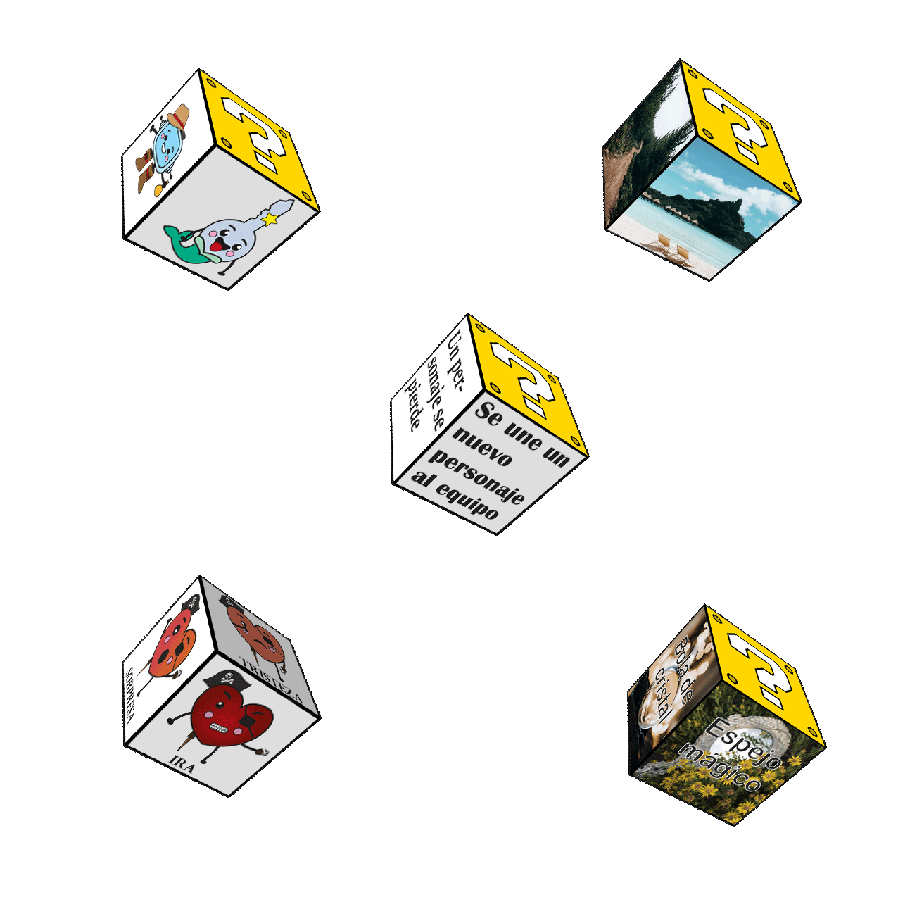
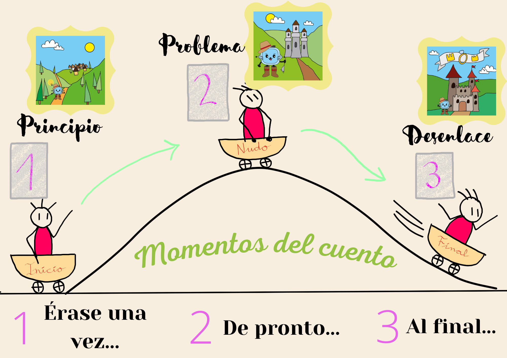

1. Las emociones!
Este es el momento de aplicar todo lo que has aprendido y de poner en juego esas habilidades que te caracterizan.
Ahora sois vosotros los escritores y escritoras. Y además, os convertiréis en unos magníficos ilustradores e ilustradoras de cuentos. ¡Que fluya la creatividad!
Trabajaréis en grupo siguiendo los pasos que os dejo más abajo. Prestad mucha atención.
¡Qué ganas tengo de leer vuestras historias!

Definición:
Hacer que algo o alguien se transforme en algo distinto a lo que era.
Ejemplo:
Después de todo lo que vais a aprender en este tema, os convertiréis en escritores profesionales.

Definición:
Capacidad y disposición para algo.
Ejemplo:
Mis habilidades son los deportes acuáticos e inventarme personajes fantásticos para cuentos.
Lectura facilitada
Ahora demostrarás tus aprendizajes.
Utilizarás tus habilidades.
Tú eres el escritor o escritora.
También dibujarás en tu cuento.
Trabajarás en grupo.
Seguirás los pasos de abajo.
Presta mucha atención.
¡Leeré tus cuentos!
¡Qué bien!
Definición:
Capacidad y disposición para algo.
Ejemplo:
Mis habilidades son los deportes acuáticos e inventarme personajes fantásticos para cuentos.
Audio

¿Ya tenéis los dados?

En cada etapa realizada habéis conseguido unos dados muy especiales.
Ahora tenéis que utilizarlos.
Vamos a repasar cuáles son: dados de personajes, emociones, escenarios o lugares, de los conflictos u obstáculos y objetos.
No olvidéis el panel sobre las expresiones que os ayudarán a iniciar vuestro relato.
Aseguraos de que están bien montados y pegados. ¡Vamos a lanzar dados!
¿Qué nos ha tocado?

Id anotando en vuestro cuaderno o en esta plantilla el resultado de vuestros lanzamientos.
Si al lanzar los dados os sale el signo de interrogación, significa que podréis elegir cualquier otro personaje, lugar, obstáculo… que acordéis en el grupo. Tomad nota también de vuestras elecciones.
Si lo hacéis en el cuaderno, tened en cuenta lo siguiente:
- ¿Qué personaje protagonizará vuestro cuento?
- ¿Cuáles serán sus emociones a lo largo de la historia?
- ¿En qué lugar se desarrollará la acción?
- ¿Qué obstáculos se van a encontrar los personajes?
- ¿Cómo podrán resolverlos?
- También anota esas expresiones que estarán presentes en vuestra narración.
Ya tenéis mucha información. Ahora os toca imaginar cómo va a suceder.
¿Por dónde empezamos?

Recordamos las partes de un cuento: introducción o inicio, nudo y desenlace.
Tenéis que ordenar todo lo que vais a escribir. De manera que se vea clara la secuencia temporal.
Id escribiendo vuestras primeras ideas sobre lo que va a suceder en el relato.
Utilizad un folio o una hoja de cuaderno.
¡A escribir!

Lo primero es hacer un borrador del cuento. Esas primeras ideas ya van tomando forma, ya se parecen a un cuento de verdad.
Tenéis que redactar la historia teniendo en cuenta las decisiones que habéis tomado sobre los pasos anteriores.
Podéis seguir las recomendaciones para mejorar la expresión escrita que se sugieren en esta guía.
Leed y adaptad sus consejos a vuestras necesidades.
¡A dibujar!

Entre todas las personas del grupo debéis realizar las ilustraciones que hayáis acordado previamente.
Elegid el lugar de vuestros diseños. En qué parte de la historia os gustaría hacer los dibujos.
No olvidéis crear la portada y la contraportada. Dejad sitio para el título, autores e ilustradores. Y también para el resumen del cuento.
Podéis utilizar los materiales y técnicas que más os gusten: lápices, rotuladores, acuarelas, collage…
¿Lo tengo todo?

Toda obra requiere de una buena revisión antes de continuar o darla por terminada.
Entre todas las personas del equipo revisaréis algunas cosas como: la ortografía, que la historia tenga sentido, que no haya repeticiones, que las imágenes estén bien situadas…
Para revisar vuestro trabajo, debéis hacer una lectura dentro del grupo.
Podéis usar esta lista para marcar si vuestro cuento va por buen camino.
Una vez revisado, podéis realizar todas las modificaciones que creáis necesarias.
¡Ánimo!
¿Seguiste los pasos que te propusimos?
Realizar estos pasos es importante para alcanzar con éxito el reto final.
Ponemos nombre a las emociones para mejorar la autoestima: reconocemos nuestras emociones y las emociones en los demás, y las analizaremos en el cuento.
Vemos las fichas interactivas con pictogramas:
https://es.slideshare.net/Espanolparainmigrantes/descripcion-de-personajes-80027362
¡Así es más fácil!